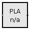
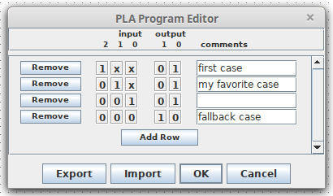

| Library: | Gates |
| Introduced: | 3.0.0 HC |
| Appearance: |  |
A PLA, or Programmable Logic Array, is essentially a configurable universal truth table. It is configured by either right-clicking and selecting "Edit PLA Program..." or clicking 'Program' in the attribute list. Within the program editor, each line specifies a pattern of ones, zeros, and 'X' values (for "don't care"), a corresponding output pattern, and (optionally) a comment or note.
If any input bit to the PLA is floating (i.e. unknown) or an error, then the every output bit of the PLA is an error value.
The value at the input pin is compared to each of the rows of the table. When a matching row is found, the output specified by that row is used as the output for the PLA. Unlike an actual truth-table, rows are matched in the order they are written, so they do not need to be mutually exclusive: if multiple rows match the input, only the first matching row will be used to determine the output. Nor do the rows need to be exhaustive: if no rows match, the output will be all zeros.
The PLA program editor additionally allows the table to be be exported to or imported from a text file. The format is straightforward, for example:
Lines starting with '#' are ignored. Other lines specify a row of the PLA program, with input first, followed by output, then an optional comment preceeded by a '#' character.# Logisim PLA program table 1xx 01 # first case 01x 01 # my favorite case 001 01 001 10 # fallback case
The comments on each row of the PLA program have no effect on the circuit simulation, but they can be useful for documenting the rationale behind each row of the program, much like comments in a programming language. However, the comment for the current matching row is also displayed on the PLA component itself during the simulation. This can be useful for debugging, or simply for displaying information to the user about what the circuit is doing.
Bonus feature: If you include a '#' symbol within a comment, only the part before the '#' will appear on the PLA during the simulation. That way you can include a short label for each row, and a longer comment for documentation.
When the component is selected or being added,
the arrow keys alter its Facing
attribute.
None.
Supports VHDL and Verilog synthesis.